Jeder Post ist durch drei Prüfrunden gegangen: skeptischer Vermittler, LinkedIn-Stratege, Recht und Marke. In Runde 1 lagen die Noten bei 6,1 bis 7,9. Die Schwelle ist 9 im Schnitt und nirgends unter 8.
Tippe auf „… mehr anzeigen“, um den ganzen Text zu lesen. Die Reihenfolge entspricht dem Plan.
Veröffentlichungsplan
Sa 28.11. · 8:00 · veröffentlichtHaltung „200.000 Leads“, zum Post
Ole KannapinnGründer performancegrowth · Neukunden für Versicherungsvermittler
Über 200.000 Leads im Versicherungsbereich.
Und ich habe lange das Falsche gezählt.
So viele Anfragen haben wir seit 2019 erzeugt, zusammengezählt über alle Kampagnen. Eine große Zahl. Sie sagt nur nichts darüber, wie viele Gespräche daraus geworden sind.
Ich mache seit 2014 Online-Marketing. Mein Gedanke war: Wenn die Anzeige gut ist und der Leadpreis stimmt, läuft der Rest von allein.
Tut er nicht.
Ein Lead war für mich fertig, sobald er beim Vermittler ankam. Was danach passierte, habe ich zu selten gefragt. Das war mein Fehler.
Was Vermittler über gekaufte Leads erzählen, kennen Sie: mehrfach verkauft, nie erreicht, am Ende Storno. Und selbst gute Anfragen bleiben liegen, weil niemand sonntags um 21 Uhr am Telefon sitzt.
Ich verstehe jeden, der beim Wort Lead die Augen verdreht.
Deshalb verkaufen wir Vermittlern keine Rohleads mehr. Unser Ziel ist der Termin, nicht die Adresse.
Die Werbung läuft in Ihrem Namen.
Jede Anfrage geht nur an Sie. Sie wird nicht weiterverkauft.
Ein KI-Assistent meldet sich per WhatsApp, in der Regel in unter einer Minute. Er fragt nach dem Bedarf und bietet Termine aus Ihrem Kalender an.
In unserer nachgestellten Demo steht der Termin 9 Minuten nach dem Formular.
Die Beratung bleibt bei Ihnen.
Was ärgert Sie an gekauften Leads am meisten?
Mehrfach verkauft, nie erreicht oder am Ende Storno?
#Versicherungsvermittler #Neukundengewinnung
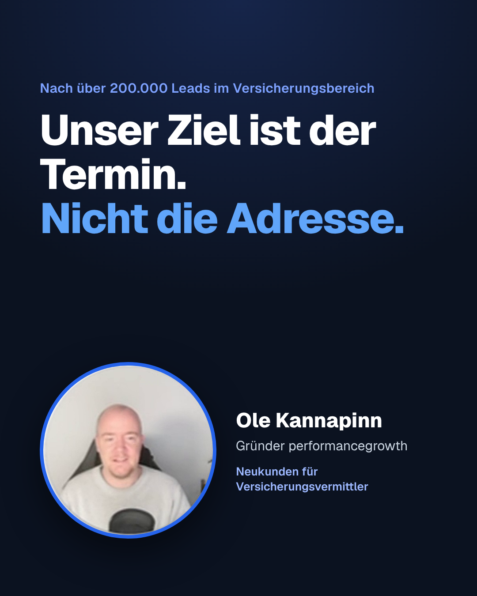
OK
Ole KannapinnErster Kommentar
Kurz zu mir: Ich bin seit 2014 im Online-Marketing und seit 2019 im Versicherungsbereich. In den nächsten Wochen zeige ich hier offen, wie unser Ablauf funktioniert, auch die Stellen, an denen es nicht glattläuft. Wenn Sie ein Thema dazu haben, schreiben Sie es gern drunter.
2. Mi 02.12. · 7:45 UhrKarussell
OK
Ole KannapinnGründer performancegrowth · Neukunden für Versicherungsvermittler
„Nicht erreichbar trotz mehrfacher Anrufversuche.“
Kennen Sie den Satz aus Reklamationen?
Manche Leads sind schlicht schlecht. Falsche Nummer, mehrfach verkauft. Gegen Mehrfachverkauf hilft nur, dass jede Anfrage bei genau einem Vermittler landet.
Aber ich habe auch viele gute Anfragen scheitern sehen. Meiner Erfahrung nach selten am Formular. Meistens an den Stunden danach.
Genau um diese Stunden kümmern wir uns: Wir schalten für Vermittler Anzeigen auf Facebook und Instagram unter ihrem eigenen Namen, und auf jede Anfrage schreibt ein KI-Assistent per WhatsApp, in der Regel in unter einer Minute. Er bietet dann gleich freie Termine aus dem Kalender des Vermittlers an.
Im Karussell erzähle ich denselben Sonntagabend zweimal.
Einmal so, wie er oft läuft.
Und einmal mit KI-Assistent.
Was ist bei Ihnen der häufigste Grund, warum aus einem Lead kein Gespräch wird?
Nicht erreicht, mehrfach verkauft oder schon woanders abgeschlossen?
#Versicherungsvermittler #Versicherungsmakler
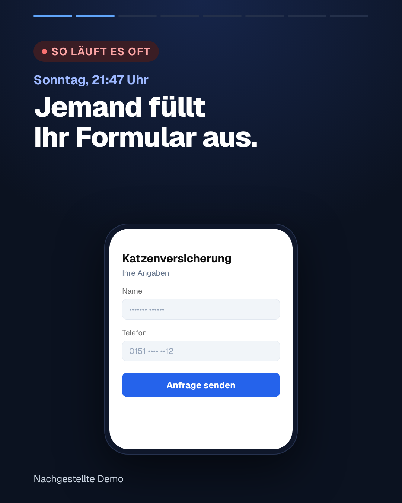
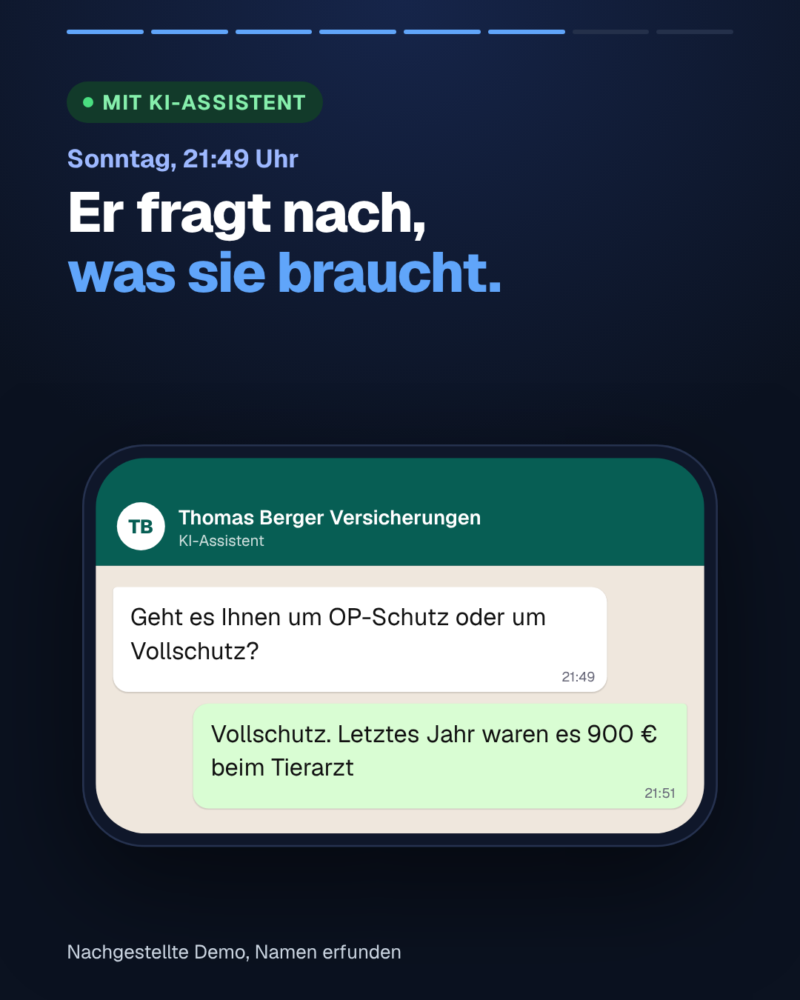
1 / 8
OK
Ole KannapinnErster Kommentar
Quelle zu Folie 4: Oldroyd, McElheran, Elkington, „The Short Life of Online Sales Leads“, Harvard Business Review, März 2011. Untersucht wurden Web-Anfragen bei über 2.000 US-Unternehmen. Verglichen wurden Unternehmen, die sich innerhalb einer Stunde meldeten, mit Unternehmen, die sich erst eine Stunde später meldeten. Wer die drei Schritte einmal live sehen will: performancegrowth.de/termin
3. Do 03.12. · 17:30 UhrVideo
OK
Ole KannapinnGründer performancegrowth · Neukunden für Versicherungsvermittler
Ihr Büro ist zu.
Die Anfrage kommt trotzdem.
Was passiert mit ihr bis Montag?
In vielen Büros erst einmal nichts. Verständlich, es ist Sonntagabend. Nur ist die Anfrage am Montagmorgen dann oft schon kalt.
Im Video erkläre ich, was in dieser Zeit stattdessen passieren kann. Daneben läuft ein nachgestellter Chat mit erfundenen Namen.
21:47 Uhr kommt eine Anfrage für eine Katzenversicherung rein.
Noch in derselben Minute schreibt der KI-Assistent per WhatsApp. Im Namen des Vermittlers, mit Texten, die er vorher freigegeben hat.
Zwei kurze Fragen. Zwei Terminvorschläge.
21:56 Uhr steht der Termin.
Der Vermittler hatte Feierabend und hat davon nichts mitbekommen.
Am Montag weiß er schon: Die Kundin will Vollschutz, beim Tierarzt waren es letztes Jahr 900 €.
Er telefoniert nicht hinterher. Er bereitet sich vor.
Die Katze ist nur das Beispiel. Bei Hausrat oder Wohngebäude läuft der Ablauf genauso.
Ehrliche Frage: Wann rufen Sie eine Anfrage von Sonntagabend heute zurück?
Montag früh, Montag irgendwann oder wenn es passt?
#Versicherungsvermittler #Versicherungsmakler #Neukundengewinnung
OK
Ole KannapinnErster Kommentar
Kurz zur Einordnung, weil mich hier nicht jeder kennt: Wir schalten für Versicherungsvermittler Anzeigen auf Facebook und Instagram, die unter ihrem Namen laufen, und jede Anfrage daraus geht nur an diesen einen Vermittler. Der KI-Assistent aus dem Video übernimmt den ersten Kontakt, danach berät der Vermittler selbst. Wie das mit Ihren eigenen Produkten und Ihrem Kalender aussähe, zeige ich Ihnen gern im Erstgespräch live in der Demo-Umgebung.
4. Di 08.12. · 7:45 UhrRechnung
OK
Ole KannapinnGründer performancegrowth · Neukunden für Versicherungsvermittler
Ihr Leadpreis ist nicht Ihr Preis.
Was kostet Sie ein Termin wirklich?
Beispiel: 25 € pro Lead, 200 € pro Termin.
Alle Werte sind angenommen, es sind keine Ergebnisse von uns oder von Kunden. Den Leadpreis habe ich bewusst günstig angesetzt. Setzen Sie Ihre eigenen Zahlen ein:
50 Leads zu je 25 € = 1.250 €
Je Lead 15 Minuten für Anrufe, Mailbox, Notiz, Nachfassen = 12,5 Stunden
12,5 Stunden zu je 60 € = 750 €
Zusammen 2.000 €. Daraus werden 10 Termine.
Macht 200 € pro Termin. 40 von 50 Anfragen haben Sie bezahlt, ohne dass ein Termin daraus wurde.
Jetzt zwei Stellschrauben, beide um 20 %:
Leadpreis 20 statt 25 €: 175 € pro Termin.
12 statt 10 Termine aus denselben 50 Anfragen: rund 167 € pro Termin.
Gleich großer Schritt, und die Quote bewegt mehr. Bei 15 statt 10 Terminen wären es rund 133 €.
Und die Quote entscheidet sich oft in den Stunden nach dem Formular.
Bei uns übernimmt den ersten Kontakt ein KI-Assistent per WhatsApp, in der Regel in unter einer Minute. Er fragt vor und bietet Termine aus Ihrem Kalender an.
In unserer nachgestellten Demo aus dem Video vom 3. Dezember stand der Termin 9 Minuten nach der Anfrage.
Was das bei Ihnen bringen kann, rechne ich gern mit Ihnen durch.
Welche Annahme ist bei Ihnen anders?
Mehr Zeit je Lead, ein anderer Stundensatz, mehr oder weniger Termine?
Schreiben Sie Ihre Werte gern drunter, ich rechne mit.
#Versicherungsvermittler #Versicherungsmakler
OK
Ole KannapinnErster Kommentar
Wenn Sie die Rechnung lieber nicht öffentlich mit Ihren echten Zahlen durchgehen wollen: Das machen wir im Erstgespräch gemeinsam. Dort sage ich Ihnen auch, was ein Termin bei uns kostet, mit Zahl. performancegrowth.de/termin
Tag 2 und 3: 8 neue Posts
Vom Agententeam überarbeitet: 2 Videos, 2 Karussells. Eingeplant, Stand der Texte 28.11.
5. So 29.11. · 8:00 UhrExklusivität fängt bei der Anzeige an
OK
Ole KannapinnGründer performancegrowth · Neukunden für Versicherungsvermittler
„Das kriegen doch fünf andere auch.“
Der Satz fällt im Erstgespräch meistens genau dann, wenn es ums Geld geht. Und ich kann es keinem verdenken. Bei manchen Leadanbietern steht der Mehrfachverkauf ganz offen in den Bedingungen, man muss nur mal bis ins Kleingedruckte lesen. Dann ruft man an, ist an dem Tag vielleicht schon der Dritte, und die Frau am anderen Ende ist bedient, bevor man überhaupt seinen Namen gesagt hat.
Deshalb läuft bei uns schon die Anzeige unter Ihrem Namen. Die schalten wir für Sie auf Facebook und Instagram, und jede Anfrage daraus geht nur an Sie. Wer da das Formular ausfüllt, hat sich bei Ihnen gemeldet. Und wenn danach per WhatsApp geschrieben wird, steht da „Hier ist der KI-Assistent von“ und dann Ihr Name.
Wenn der Kunde dann antwortet, hat ihn vorher noch keiner dreimal angerufen. Mit so einem Kunden redet es sich im Termin anders.
Und wenn Sie irgendwann aufhören, bleiben das trotzdem Ihre Kunden.
Wie oft hören Sie am Telefon „Da hat schon einer angerufen“?
#Versicherungsvermittler #Neukundengewinnung
OK
Ole KannapinnErster Kommentar
Kleiner Tipp für den Sonntag: Schauen Sie bei Ihrem aktuellen Leadanbieter mal in die Bedingungen, ob da etwas zu Weiterverkauf oder Mehrfachvergabe steht. Und wenn da gar nichts steht, fragen Sie nach. Die Antwort sagt oft schon eine Menge.
6. So 29.11. · 11:30 UhrDie vier Tage bis zum Termin
OK
Ole KannapinnGründer performancegrowth · Neukunden für Versicherungsvermittler
Termin steht, Donnerstag 16 Uhr. Was passiert eigentlich bis dahin?
Bei vielen Vermittlern hört die Kundin bis dahin nichts mehr. Verständlich, Sie haben ja auch genug anderes auf dem Tisch. Am Donnerstag sitzt man sich gegenüber, die erste Frage ist „Was haben Sie denn bisher so?“, und schon geht ein guter Teil vom Termin fürs Abfragen drauf.
Genau diese Tage nutzt der KI-Assistent, der bei uns schon den ersten Kontakt per WhatsApp gemacht und den Termin angeboten hat. Er schreibt der Kundin per WhatsApp die Fragen, die sonst im Termin kommen würden, so Sachen wie Miete oder Eigentum und wie groß die Wohnung ist, je nachdem, was für den Termin noch fehlt.
Am Mittwoch steht bei Ihnen in der Software dann „Termin vorbereiten“ auf der Liste. Darin ist alles, was die Kundin im Formular und im Chat gesagt hat, und was noch fehlt, ist markiert. Frau Albers im Bild gibt es nicht, die Daten sind erfunden. Bei ihr wäre die offene Frage die nach den Fahrrädern, die klären Sie dann eben im Termin.
Mich würde mal interessieren, womit Ihre Ersttermine heute anfangen.
#Versicherungsmakler
7. So 29.11. · 15:00 UhrPolicen vorab, vom Foto zum Vergleichs
OK
Ole KannapinnGründer performancegrowth · Neukunden für Versicherungsvermittler
Irgendwann im Termin steht der Kunde auf und holt den Ordner.
Dann blättern Sie zehn Minuten mit, und irgendwo ganz hinten taucht ein Vertrag auf, von dem er selbst nicht mehr wusste, dass er ihn hat.
Das haben wir seit Kurzem umgedreht. Nach der Buchung fragt der KI-Assistent Ihren Kunden per WhatsApp, ob er Fotos oder PDFs seiner Policen schicken mag, und zwar nur mit seiner Einwilligung. Die Software liest die Verträge automatisch aus, und in Ihrer Terminvorbereitung haben Sie dann ein Vergleichsblatt.
Und nicht auf jedem Blatt steht etwas Auffälliges. Dann wissen Sie schon vorher, dass bei dem Kunden alles sauber aussieht, und für den Termin ist das auch was wert.
Was war das Kurioseste, das Sie mal in einem Kundenordner gefunden haben?
#Versicherungsvermittler #Versicherungsmakler
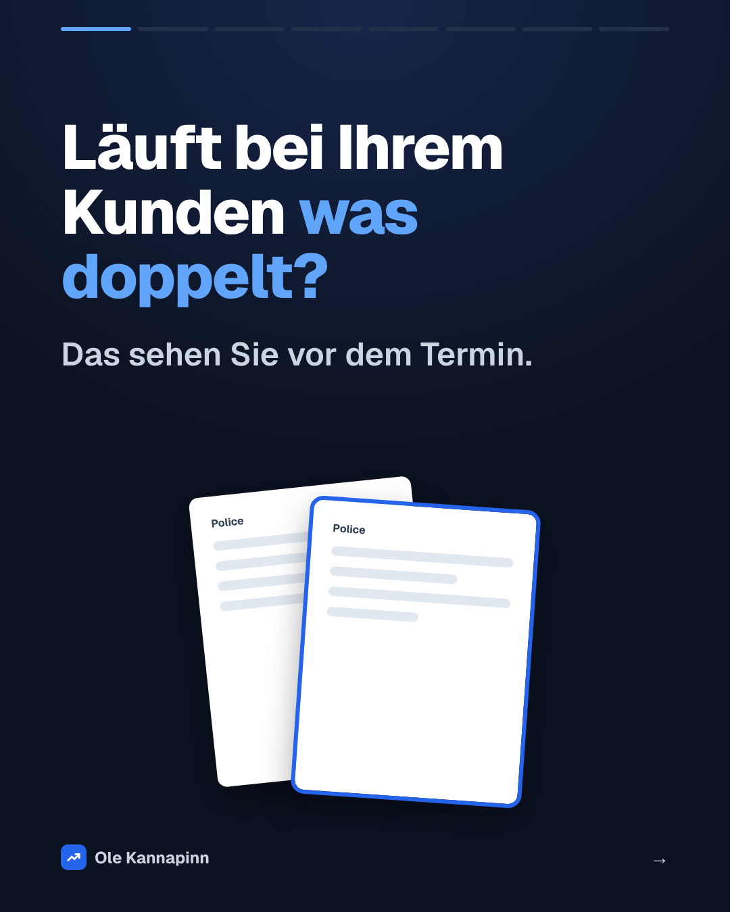
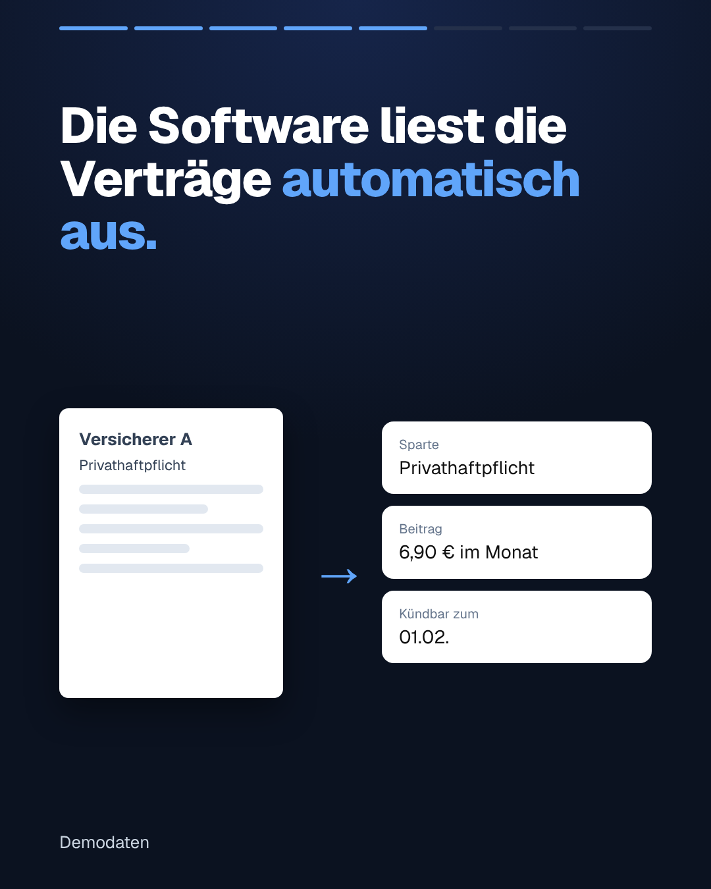
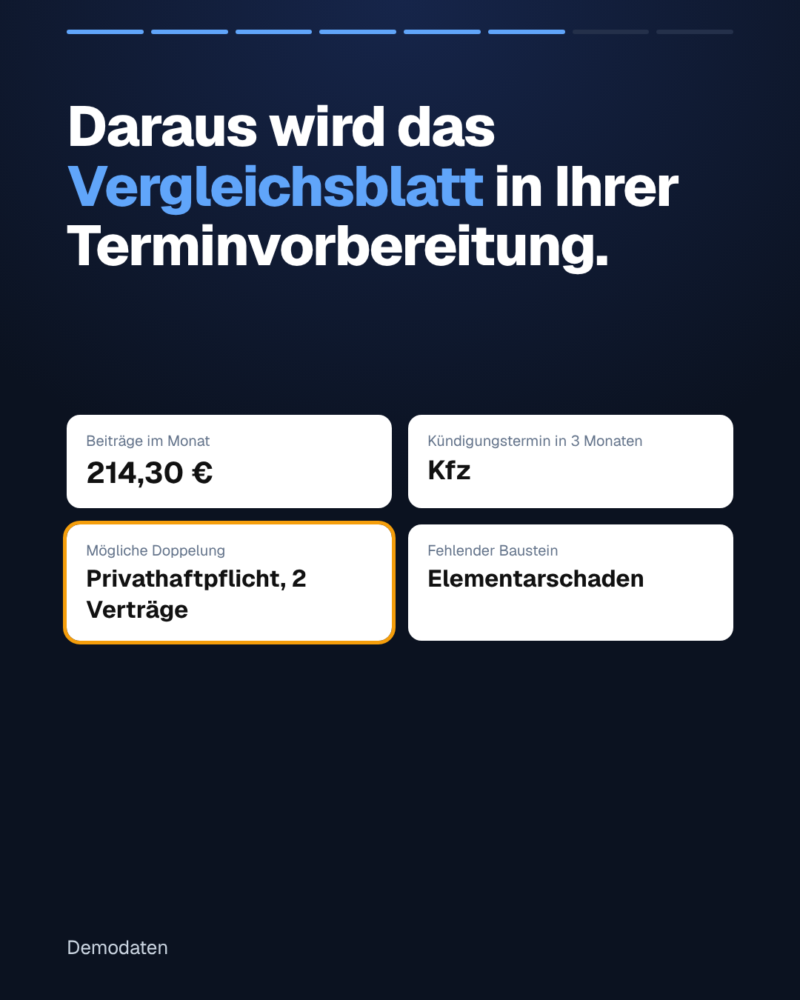
1 / 8
OK
Ole KannapinnErster Kommentar
Für alle, die mich noch nicht kennen: Wir schalten für Vermittler Anzeigen auf Facebook und Instagram unter deren Namen, und der KI-Assistent bietet den Interessenten per WhatsApp Termine im Kalender des Vermittlers an. Das Vergleichsblatt gehört zur Software, in der Sie diese Termine dann vorbereiten. Im Erstgespräch zeig ich Ihnen das Blatt in der Demo, gern mit Ihrer eigenen Sparte, und dann rechnen wir zusammen durch, ob sich das für Sie lohnt. Dauert 15 Minuten. performancegrowth.de/termin
8. So 29.11. · 18:30 UhrUmfrage „Wo geht Ihre Zeit drauf?“
OK
Ole KannapinnGründer performancegrowth · Neukunden für Versicherungsvermittler
Wo geht bei Ihnen die meiste Zeit drauf, bevor ein Termin überhaupt steht?
Ich geb gleich zu, ich hab da ein eigenes Interesse dran.
A) Hinterhertelefonieren, bis endlich mal einer rangeht
B) Termine abstimmen, bis einer passt
C) Nachfassen, wenn sich keiner mehr meldet
D) Policen und Unterlagen zusammenkriegen
E) Was ganz anderes, dann bitte drunterschreiben
Schreiben Sie den Buchstaben in die Kommentare, und wer mag, gleich dazu, wie viel Zeit ihn das pro Woche so ungefähr kostet.
Für A bis D schreibt bei uns ein KI-Assistent per WhatsApp, und ich will wissen, wo das bei Ihnen am meisten bringen würde. Ich hab da so meine Vermutung, die schreibe ich aber erst, wenn ein paar Antworten da sind, sonst beeinflusse ich Sie ja.
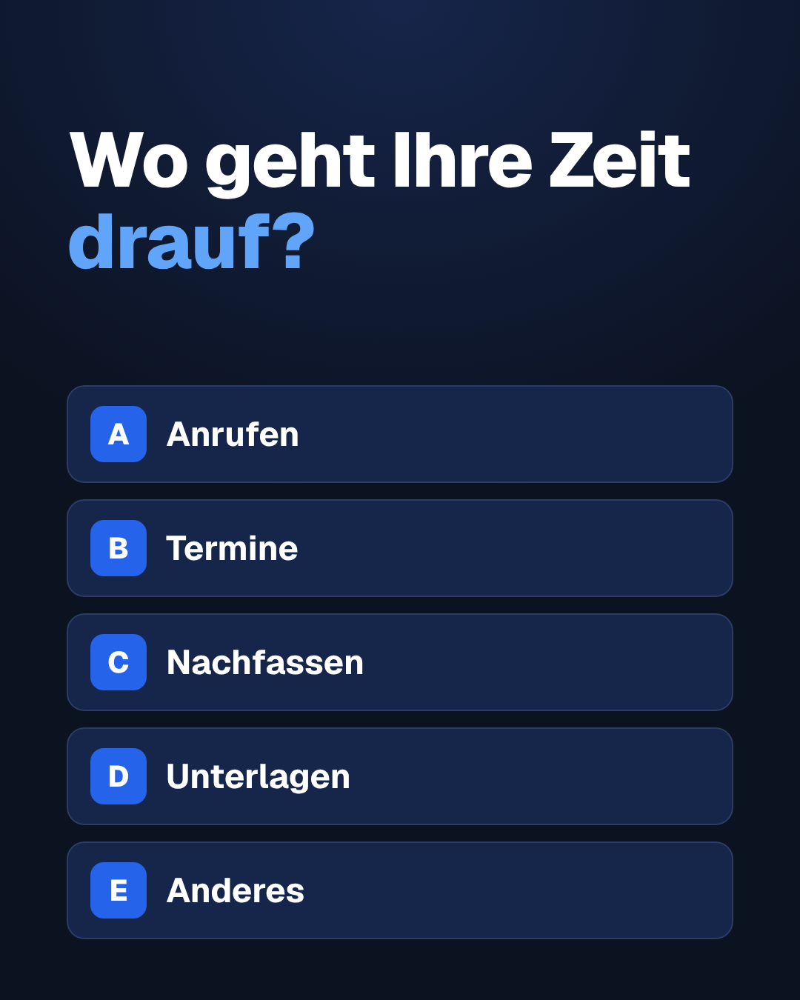
9. Mo 30.11. · 8:00 UhrStartseite „Heute“, ein Morgen in der
OK
Ole KannapinnGründer performancegrowth · Neukunden für Versicherungsvermittler
Montag, kurz vor acht. Wo sehen Sie eigentlich, was heute alles ansteht?
Wenn ich das im Erstgespräch frage, kommt meistens eine kleine Aufzählung. Kalender, Postfach, ein paar Sachen in WhatsApp, der gelbe Zettel am Bildschirm, und der Rest ist im Kopf. Abends sitzt man dann noch da und trägt nach, was in den Gesprächen eigentlich war.
Wir haben dafür in unserer Software eine Seite gebaut, die heißt einfach „Heute“. Da stehen morgens Ihre Termine drauf. Zu jedem Termin steht da auch, was die Kundin dem KI-Assistenten im WhatsApp-Chat schon erzählt hat, Sie gehen also in kein Gespräch mehr ohne Vorwissen. Und nach dem Gespräch klicken Sie das Ergebnis an.
Ihre Beratungsdoku bleibt natürlich, die nimmt Ihnen keine Software ab.
Wie viele Stellen sind es bei Ihnen? Schreiben Sie mir die Zahl drunter.
#Versicherungsvermittler
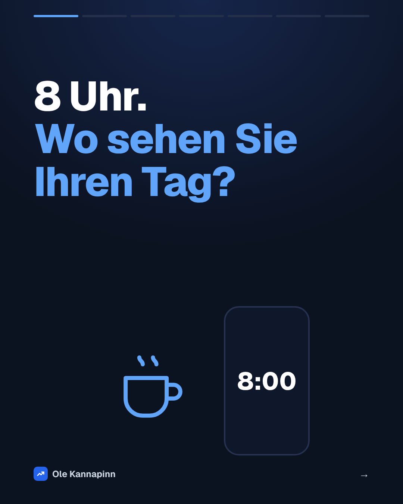
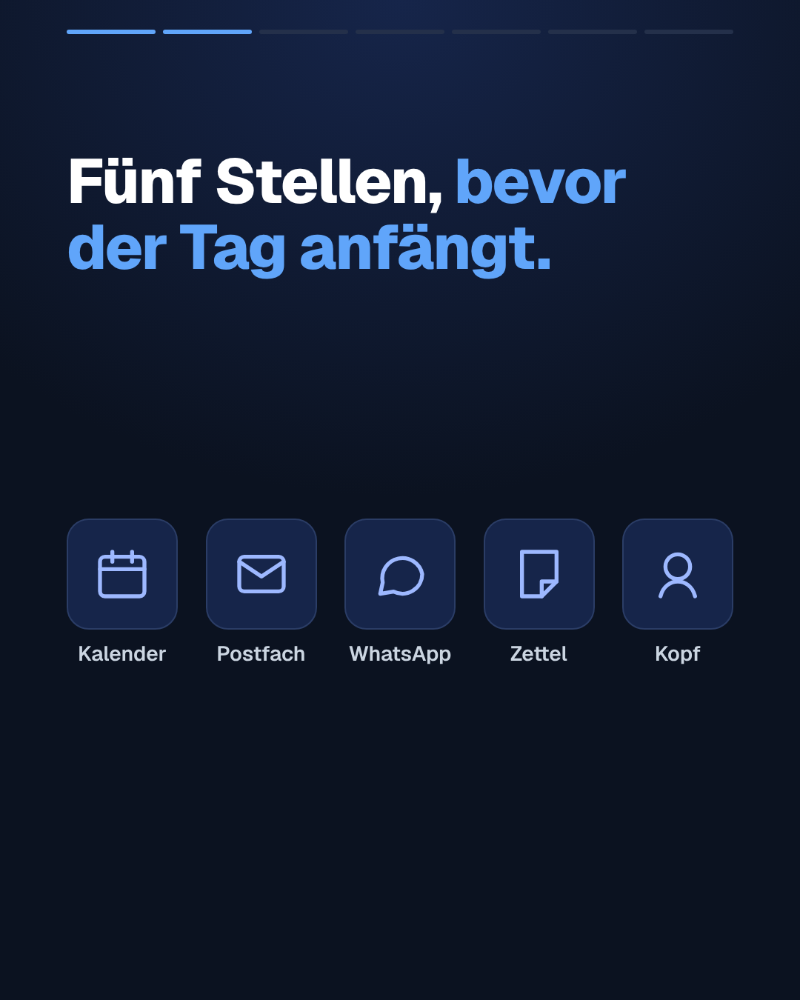
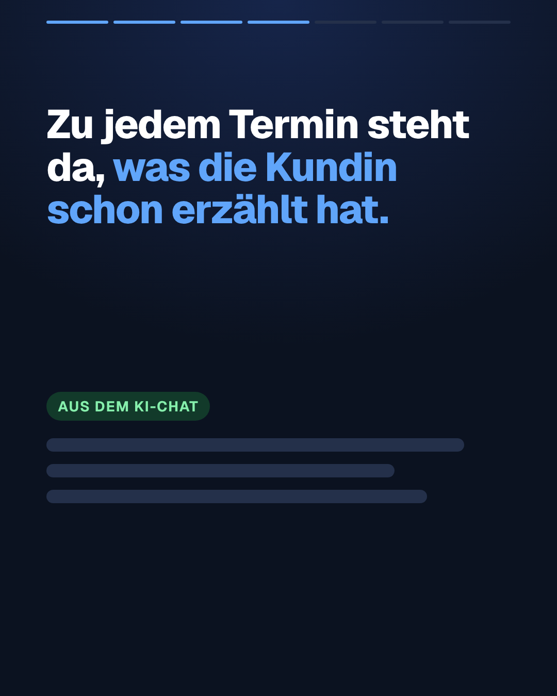
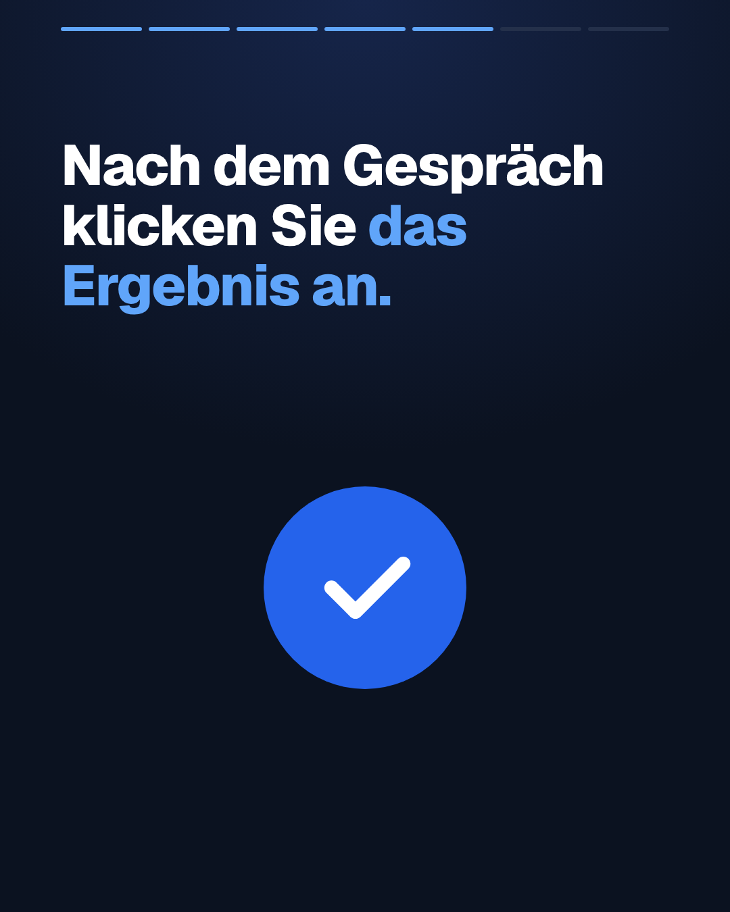
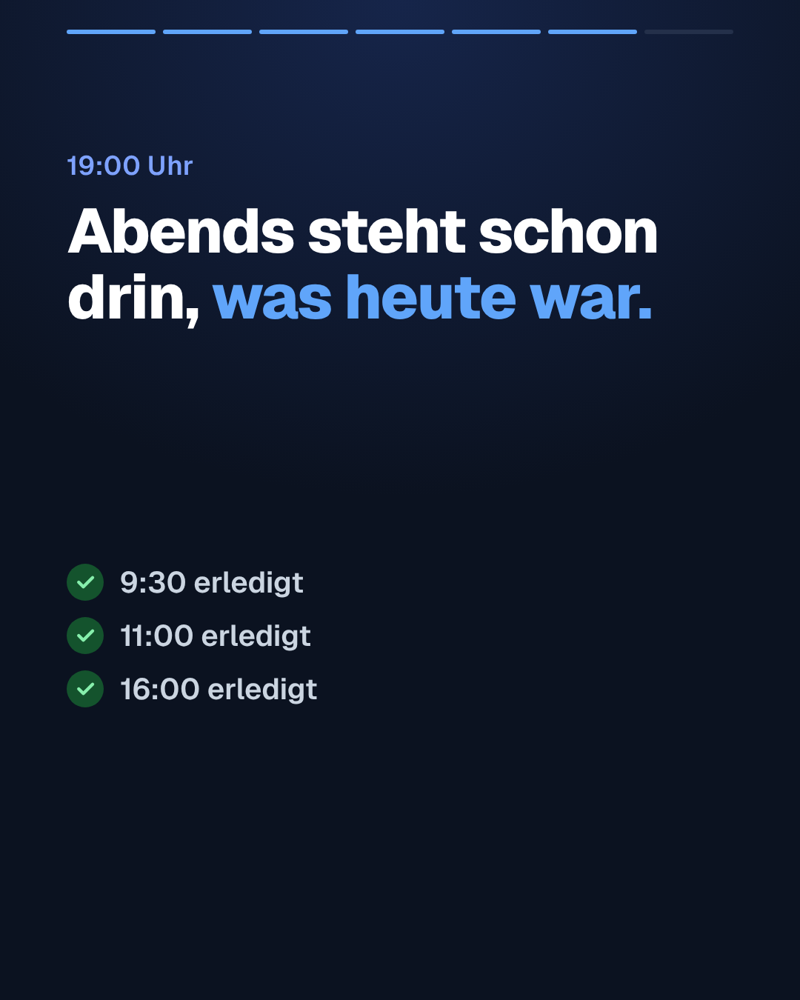
1 / 7
OK
Ole KannapinnErster Kommentar
Ein bisschen Hintergrund, falls Sie neu hier sind: Die Software bekommen Vermittler bei uns zusammen mit Anzeigen auf Facebook und Instagram, die unter ihrem Namen laufen, und mit einem KI-Assistenten, der den Interessenten per WhatsApp Termine aus ihrem Kalender anbietet. Die Beratung machen Sie selbst, „Heute“ zeigt Ihnen vorher, was im Chat schon besprochen wurde.
11. Mo 30.11. · 15:00 UhrDatenschutz, vier Fragen für Ihren Dat
OK
Ole KannapinnGründer performancegrowth · Neukunden für Versicherungsvermittler
Ich bin kein Datenschutzbeauftragter, und ich will hier auch nicht so tun.
Aber wenn ein Vermittler hört, dass ihm Kunden ihre Policen per WhatsApp schicken, kommt die Frage nach dem Datenschutz oft noch im selben Satz. Und das finde ich auch richtig so. Also sage ich Ihnen einfach, wie das eingestellt ist.
Kurz zum Hintergrund: Bei uns schreibt nach jeder Anfrage ein KI-Assistent per WhatsApp mit den Interessenten, und nach der Terminbuchung fragt er auch nach Policen. Genau darum geht es hier.
Ob Ihr Kunde Unterlagen schickt, entscheidet er selbst, der KI-Assistent fragt vorher nach seiner Einwilligung. In unserer Software liegen die Unterlagen auf Servern in der EU, und sehen kann man sie nur in Ihrem Konto. Da kommt kein anderer Vermittler ran. Nach einiger Zeit löscht die Software sie automatisch wieder.
Das Gespräch mit Ihrem Datenschutzbeauftragten ersetzt das nicht. Aber Sie gehen nicht mit leeren Händen rein, und wenn Sie mögen, zeige ich Ihnen vorher, wie alles eingestellt ist.
Die vier Fragen im Bild würde ich an Ihrer Stelle jedem Anbieter stellen, mir auch.
Was wäre bei Ihnen die erste Frage, wenn Kunden Ihnen Policen per WhatsApp schicken?
#Datenschutz #Versicherungsvermittler
OK
Ole KannapinnErster Kommentar
Wer die Einstellungen sehen will, bevor er mit seinem Datenschutzbeauftragten spricht, schreibt mir eine Nachricht. Den Auftragsverarbeitungsvertrag schicke ich Ihnen dann gern vorab zum Lesen.
12. Mo 30.11. · 18:30 UhrErst eine Sparte
OK
Ole KannapinnGründer performancegrowth · Neukunden für Versicherungsvermittler
Ich rate fast immer dazu, mit einer Sparte anzufangen. Auch wenn Sie lieber gleich drei hätten.
Im Erstgespräch fragen mich viele, ob wir nicht Hausrat und Haftpflicht zusammen starten können. Können wir, klar. Sparte heißt bei uns übrigens: Wir schalten für Sie Anzeigen auf Facebook und Instagram zu genau diesem Thema, unter Ihrem Namen, und der KI-Assistent bietet den Interessenten per WhatsApp Termine in Ihrem Kalender an.
Am Anfang hab ich das selbst anders gesehen. Mehr Kampagnen heißt mehr Anfragen, so hab ich mir das jedenfalls gedacht. In der Praxis lief das nicht so. Wenn drei Kampagnen gleichzeitig laufen, weiß nach ein paar Wochen keiner mehr so richtig, welche davon eigentlich trägt. Und bevor eine Sparte richtig läuft, ist die Geduld oft schon weg, und zwar auf beiden Seiten.
Entscheidend ist im Prinzip das Verhältnis aus Leadpreis, Abschlussquote und Provision. Das sieht man nur sauber, wenn erst mal eine Sparte allein läuft. Bei vielen ist das die Katzenversicherung, weil wir da die meisten Erfahrungswerte haben. Ja, Katze, ich weiß, klingt erst mal klein.
Dann schauen wir zusammen drauf, was ein Lead kostet, was ein Termin und was am Ende ein Abschluss. Das sehen Sie in der Software, sobald Sie die Ergebnisse eintragen. Erst wenn die Zahlen stehen, kommt die nächste Sparte dazu.
Und die kommt oft über den Termin. Der KI-Assistent fragt im WhatsApp-Chat ja schon nach bestehenden Verträgen, dann sehen Sie vor dem Termin, was der Kunde sonst noch hat. Und viele wollen im Termin dann sowieso alles einmal durchgehen.
Wer gerade überlegt, mit mehreren Sparten gleichzeitig loszulegen, schreibt mir gern. Dann sag ich Ihnen ehrlich, womit ich an Ihrer Stelle anfangen würde.
Besser: Handyfoto deiner handschriftlichen Notiz „1 Sparte / Lead? Termin? Abschluss? / dann Sparte 2“. Bis dahin dieses Bild.
OK
Ole KannapinnErster Kommentar
Welche Sparte bei Ihnen zum Start passt, kann ich vorher nicht sagen. Das rechnen wir im Erstgespräch mit Ihren eigenen Provisionen durch. performancegrowth.de/termin
Di und Mi: 6 Posts
Von dir bestätigt, Medien gebaut, eingeplant.
13. Di 01.12. · 8:00 UhrKarussell, 10 Folien
OK
Ole KannapinnGründer performancegrowth · Neukunden für Versicherungsvermittler
Acht Fragen, bevor Sie einem Leadanbieter Geld geben.
Stellen Sie sie auch mir.
Im Erstgespräch fragen mich die meisten Vermittler zuerst nach dem Leadpreis. Verstehe ich. Das ist die eine Zahl, die man gut nebeneinanderlegen kann.
Ob sich das am Ende rechnet, hängt aber an Stellen, nach denen kaum einer fragt. Wer bekommt dieselbe Anfrage noch? Und wer meldet sich bei der Interessentin, während Sie gerade bei einem anderen Kunden am Küchentisch sitzen?
Ich glaube, viele lassen das weg, weil es misstrauisch klingt. Ist es ja auch. Bei einem Vertrag über ein paar Monate würde ich trotzdem lieber einmal zu viel fragen.
Die acht Fragen stehen im Karussell. Ich hab sie so aufgeschrieben, wie ich sie als Vermittler stellen würde.
Kurz für alle, die mich nicht kennen. Wir schalten für Vermittler Anzeigen auf Facebook und Instagram unter ihrem eigenen Namen. Jede Anfrage daraus geht nur an diesen einen Vermittler, und ein KI-Assistent schreibt der Person per WhatsApp, in der Regel in unter einer Minute.
Meine eigenen Antworten auf alle acht stehen gleich in den Kommentaren.
Welche Frage würden Sie noch dazuschreiben?
#Versicherungsvermittler #Versicherungsmakler
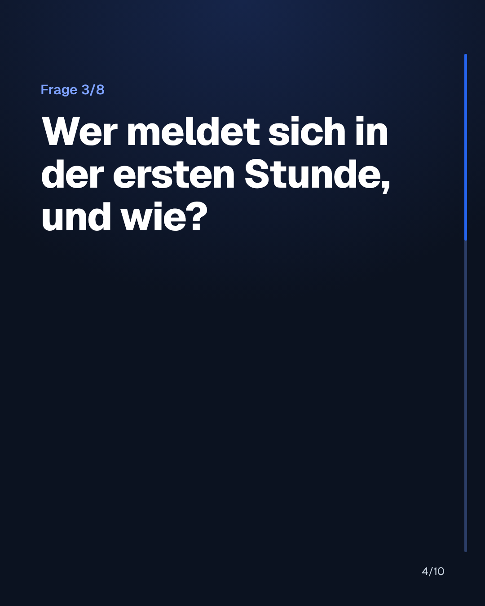
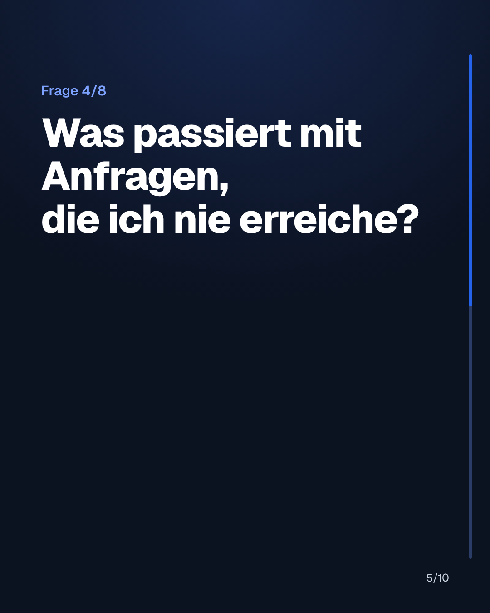
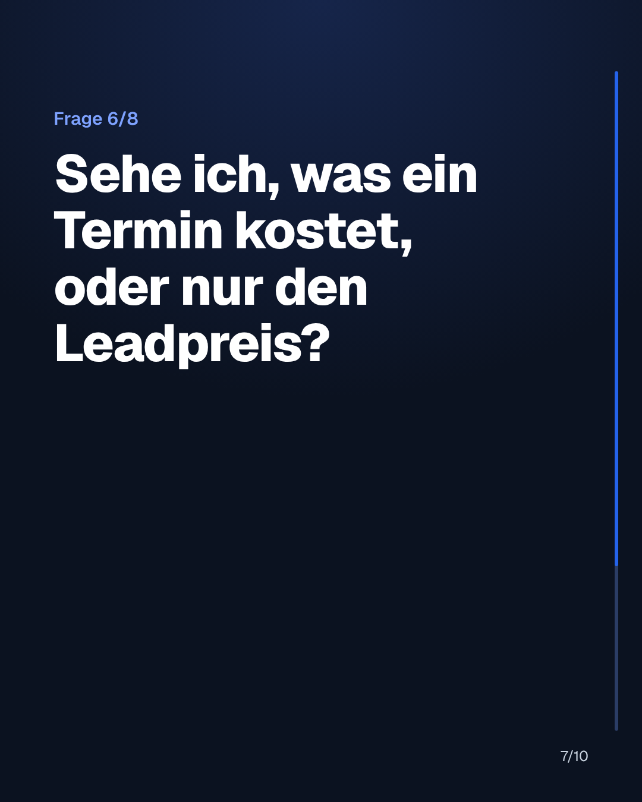
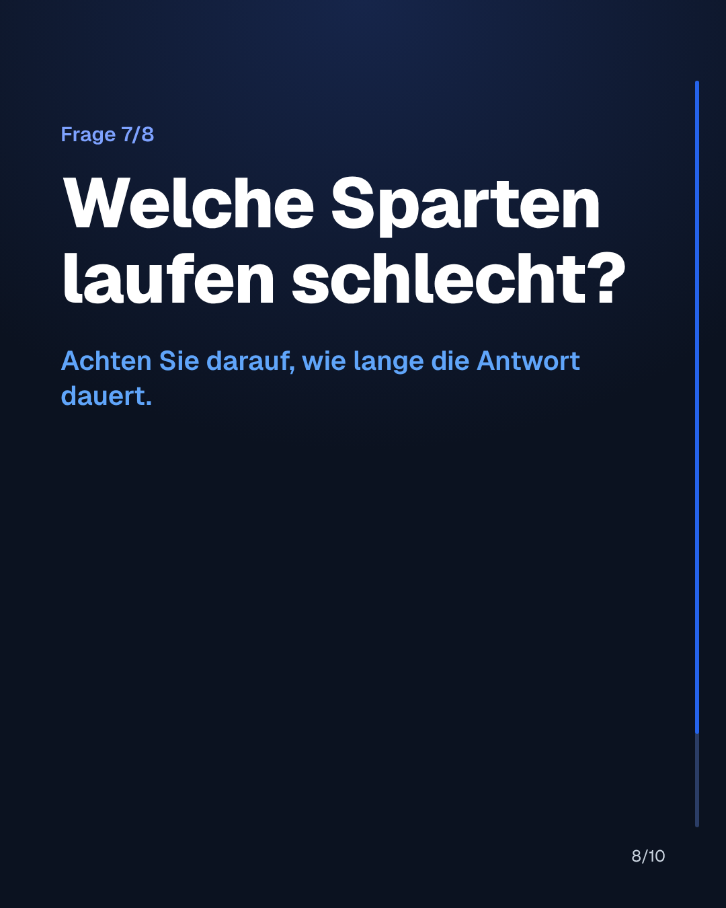
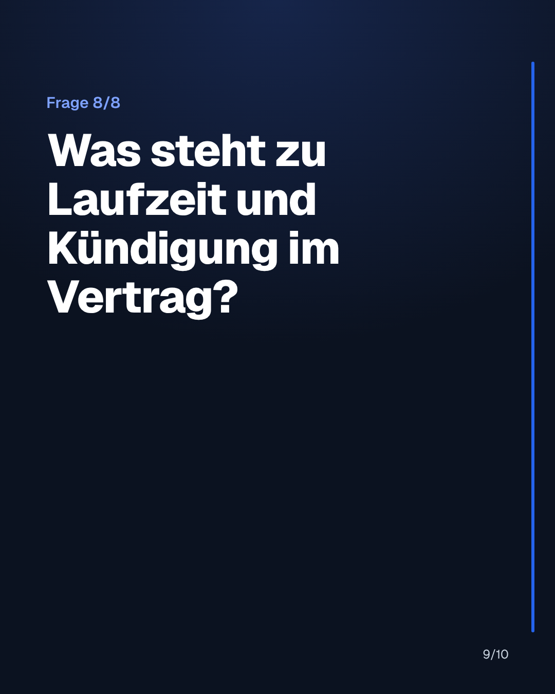
1 / 10
OK
Ole KannapinnErster Kommentar
Wie versprochen, meine Antworten:
1. Unter Ihrem Namen, auf Facebook und Instagram.
2. Niemand. Jede Anfrage geht nur an Sie und wird nicht weiterverkauft.
3. Ein KI-Assistent per WhatsApp, in der Regel in unter einer Minute. Er sagt im Chat, dass er eine KI ist. Sobald Sie selbst schreiben, hält er sich raus.
4. Der Assistent fasst per WhatsApp nach, bis die Person antwortet oder bucht, dann hört er sofort auf. Hat jemand kein WhatsApp, bekommen Sie eine Push-Nachricht. Und wer "Melden Sie sich in zwei Wochen" schreibt, kommt auf Wiedervorlage.
OK
Ole KannapinnZweiter Kommentar
5. Ihnen. Ihre Kunden bleiben Ihre Kunden, auch wenn Sie aufhören.
6. Die Kosten je Lead kommen direkt aus dem Werbekonto. Termine und Abschlüsse tragen Sie mit einem Klick ein, dann sehen Sie in der Software auch, was ein Termin und was ein Abschluss gekostet hat.
7. Das hängt am Verhältnis aus Leadpreis, Abschlussquote und Provision. Wir haben über die Jahre viel Erfahrung gesammelt, welche Produkte gut laufen, und das zeige ich Ihnen im Erstgespräch für Ihre Sparte. Die meisten Erfahrungswerte haben wir bei der Katzenversicherung.
8. Ohne Laufzeit, 3 Monate oder 12 Monate, das wählen Sie. Die Kündigungsfrist steht im Angebot, fragen Sie ruhig vorher danach.
Wenn Sie zu einer Antwort mehr wissen wollen, fragen Sie gern nach.
14. Di 01.12. · 12:00 UhrNur Text
OK
Ole KannapinnGründer performancegrowth · Neukunden für Versicherungsvermittler
„Ich brauche keine Leads. Bei mir läuft alles über Empfehlung.“
Das hat mir ein Makler am Telefon gesagt. Vier Monate später rief er selbst wieder an.
Erst mal, damit hier keiner was falsch versteht. Eine Empfehlung ist das Beste, was Ihnen als Vermittler passieren kann. Der Kunde kommt schon mit Vertrauen, das ein anderer für Sie aufgebaut hat. Mit keiner Anzeige komm ich da ran, und das sag ich auch jedem so.
Der Makler war damals ganz ruhig. Freundlich, kein bisschen genervt, er hat mir einfach erklärt, warum er so was nicht braucht. Ich hab gesagt, dann passt das ja, und wir haben aufgelegt.
Beim zweiten Mal erzählte er von einem Monat, in dem keine einzige Empfehlung kam. Kein Drama, sagte er, es kam halt einfach nichts. Und er wüsste gar nicht so richtig, was er in so einem Monat machen soll, außer warten.
Das fand ich ziemlich ehrlich. Er hatte ja nichts falsch gemacht. Seine Kunden mögen ihn, sonst gäbe es die Empfehlungen gar nicht.
Wann jemand Ihren Namen weitergibt, liegt halt nicht bei Ihnen. Da kann man noch so gut arbeiten.
Wir schalten für Vermittler Anzeigen auf Facebook und Instagram, unter ihrem eigenen Namen. Wer darüber anfragt, hat sich bei Ihnen gemeldet, und die Anfrage bekommt sonst keiner. Eine Empfehlung ist das nicht, klar. Aber Sie haben dann selbst etwas in der Hand, wenn mal ein Monat so läuft.
Woher kam eigentlich Ihr letzter Neukunde?
Nicht im Schnitt, einfach der letzte.
#Versicherungsvermittler #Neukundengewinnung
OK
Ole KannapinnErster Kommentar
Kleine Beobachtung von meiner Seite. Wenn ich im Erstgespräch frage, woher die Neukunden kommen, sagen die meisten zuerst Empfehlung. Und oft schiebt dann jemand nach, dass die letzte schon ein paar Wochen her ist. Wer sich anschauen möchte, wie Anzeigen unter dem eigenen Namen bei uns laufen, 15 Minuten reichen dafür, performancegrowth.de/termin
15. Di 01.12. · 17:30 UhrVideo mit Gesicht
OK
Ole KannapinnGründer performancegrowth · Neukunden für Versicherungsvermittler
Ich komme aus dem Abnehm-Coaching.
Klingt weit weg von Hausrat und Haftpflicht, ich weiß.
Bevor ich 2019 bei Versicherungen gelandet bin, habe ich ein Abnehm-Coaching aufgebaut. Das Geschäft hat seinen eigenen Kalender. Im Januar will gefühlt halb Deutschland abnehmen, im Februar nur noch ein paar.
Wer sich am 3. Januar bei uns gemeldet hat, war an dem Tag fest entschlossen. Wenn wir erst am 6. zurückgerufen haben, war bei vielen schon wieder Alltag. Und dann kam ein Satz, den Sie vermutlich auch kennen. Dazu unten mehr.
Wir haben damals viel zu lange an Anzeigen und Überschriften rumgeschraubt. Dass das eigentliche Problem erst nach dem Formular losging, hab ich ehrlich gesagt ziemlich spät kapiert.
Bei Versicherungen ist das verteilter. Mal ist es der Wasserschaden beim Nachbarn, mal ist das zweite Kind unterwegs. In so einer Woche füllt jemand das Formular aus. Ein paar Tage später ist der Wasserschaden wieder das Problem vom Nachbarn.
Deshalb bauen wir für Vermittler Anzeigen auf Facebook und Instagram, die unter ihrem eigenen Namen laufen, und jede Anfrage geht nur an sie. Ein KI-Assistent schreibt dann per WhatsApp, in der Regel in unter einer Minute. Er gibt sich als KI zu erkennen und bietet Termine aus dem Kalender an. Die Beratung macht danach der Vermittler selbst.
Der Satz von damals war übrigens fast immer „Ich muss das erst noch mit meinem Partner besprechen.“
Welcher Satz ist es bei Ihnen, wenn Sie merken, dass Sie zu spät dran sind?
#Versicherungsvermittler #Neukundengewinnung
OK
Ole KannapinnErster Kommentar
Falls Sie sehen möchten, wie das bei einem Vermittler konkret abläuft, von der Anzeige bis zum Termin im Kalender, zeige ich Ihnen das in 15 Minuten, gern am Beispiel Ihrer Sparte. performancegrowth.de/termin
16. Mi 02.12. · 8:00 UhrNur Text
OK
Ole KannapinnGründer performancegrowth · Neukunden für Versicherungsvermittler
„Wer mir Leads verkaufen will, soll mir erst mal sagen, ...“
Wie würden Sie diesen Satz zu Ende schreiben?
Ich frage das als jemand, der selbst Leads verkauft.
Gestern habe ich acht Fragen aufgeschrieben, die man jedem Leadanbieter stellen sollte. Hinterher ist mir aufgefallen, dass das eben meine acht sind. Mich interessiert, welche Frage Ihnen als Erstes einfällt.
Ein halber Satz reicht. Unfreundliche Antworten nehme ich auch.
Ich schreibe unter jede Antwort etwas zurück.
Mein eigenes Satzende wäre übrigens „... wer die Anfrage außer mir noch bekommt.“
#Versicherungsvermittler #Versicherungsmakler
OK
Ole KannapinnErster Kommentar
Kurz für alle, die mich nicht kennen. Ich bin Ole von performancegrowth aus Berlin. Wir schalten für Vermittler Anzeigen auf Facebook und Instagram unter ihrem eigenen Namen, und jede Anfrage geht nur an diesen einen Vermittler. Ein KI-Assistent schreibt der Person per WhatsApp, in der Regel in unter einer Minute, und sagt dazu, dass er eine KI ist. Die acht Fragen von gestern stehen als Karussell in meinem Profil, meine Antworten darunter.
17. Mi 02.12. · 12:00 UhrChat-Video
OK
Ole KannapinnGründer performancegrowth · Neukunden für Versicherungsvermittler
Wir haben unserem KI-Assistenten eine Sache verboten.
Ausgerechnet die Frage, die im Chat am nächsten liegt.
„Welcher Tarif ist denn der beste? Reicht der günstigste?“
Im Video sehen Sie einen nachgestellten Chat mit erfundenen Namen. Dienstag, 12:31 Uhr, eine Anfrage für Wohngebäude. Der Assistent stellt sich als KI vor und fragt nach Haus und Baujahr. Dann kommt genau diese Frage.
Er beantwortet sie nicht. Er schreibt, dass Herr Beispiel das persönlich mit ihr bespricht, und schlägt zwei Termine vor. Sie hakt nach. Er bleibt dabei.
Das ist mit Absicht so eingestellt. Ob der günstigste Tarif reicht, hängt beim Wohngebäude an Sachen, die ich keinem Chat überlassen will. Wohnfläche, Elementarschutz, was beim letzten Sturm am Dach war. Und das Beratungsprotokoll trägt hinterher Ihren Namen.
Im AfW-Vermittlerbarometer sehen 69 Prozent der befragten Vermittler die Fehleranfälligkeit von KI als Problem. Ich halte die Sorge für berechtigt. Deshalb lassen wir die KI an dieser Stelle gar nicht erst raten.
Für alle, die neu hier sind, kurz zur Einordnung. Wir schalten für Vermittler Anzeigen auf Facebook und Instagram unter ihrem eigenen Namen. Jede Anfrage geht nur an diesen einen Vermittler, und der KI-Assistent schreibt per WhatsApp, in der Regel in unter einer Minute.
Welche Frage würden Sie einer KI nie überlassen?
Bei mir ist es die Tarifwahl.
#Versicherungsvermittler #Versicherungsmakler
OK
Ole KannapinnErster Kommentar
Quelle zur Zahl: 18. Vermittlerbarometer des AfW Bundesverband Finanzdienstleistung, rund 1.000 befragte Vermittler, Befragung Dezember 2025 bis Februar 2026, berichtet von Cash. am 17.9.2026. Der Chat im Video ist nachgestellt, Namen und Daten sind erfunden. Wenn Sie sehen wollen, wo der Assistent bei Ihren Sparten abgibt, zeige ich Ihnen das gern in 15 Minuten in der Demo-Umgebung: performancegrowth.de/termin
18. Mi 02.12. · 17:30 UhrZitatbild
OK
Ole KannapinnGründer performancegrowth · Neukunden für Versicherungsvermittler
Ich wurde mal zum Online-Marketer des Jahres gewählt.
Einen Versicherungsvertreter hat das 2019 kein bisschen beeindruckt.
Die Auszeichnung kam von Gründer.de. Davor hatte ich jahrelang Anzeigen gebaut, bei denen Leute ein Formular ausfüllen. Das konnte ich.
Dann saß ich zum ersten Mal mit einem Vertreter am Tisch und habe ihm erzählt, wie viele Anfragen wir für ihn holen könnten.
Er hat genickt, seinen Kalender aufgemacht und gefragt, wann er die eigentlich alle anrufen soll.
Vormittags war er bei Kunden. Die Beratungsdoku hat er abends gemacht, und irgendwo dazwischen kamen die Schadenmeldungen.
Ich wusste nicht, was ich sagen soll. Über diese Frage hatte ich bis dahin nie nachgedacht.
Er hätte die Anfragen zwischen zwei Terminen angerufen, viele nicht erreicht und sich einen Zettel für den nächsten Tag geschrieben. Irgendwann wäre die Anfrage eine Woche alt gewesen.
Das Gespräch steckt ziemlich tief in dem, was wir heute bauen. Die Anzeigen laufen auf Facebook und Instagram unter dem Namen des Vermittlers, und jede Anfrage geht nur an ihn. Den ersten Kontakt übernimmt ein KI-Assistent per WhatsApp, der sich als KI zu erkennen gibt. Er meldet sich in der Regel in unter einer Minute, fragt nach dem Bedarf und schlägt freie Zeiten vor, aus genau so einem Kalender, wie ihn mir der Vertreter damals gezeigt hat.
Ich glaube, fast jeder hatte in seinem ersten Jahr so einen Moment.
Welcher Satz von einem Kunden oder Kollegen hat Ihnen damals gezeigt, wie viel Sie noch lernen mussten?
#Versicherungsvermittler
OK
Ole KannapinnErster Kommentar
Ich fange mal an. Mein Satz war die Frage oben, „wann soll ich die alle anrufen?“.
Was du vor dem Posten bestätigen musst
AntwortzeitBestätigt.
Exklusivität und keine RohleadsStimmt ohne Ausnahme, auch über die Lieferantenrolle?
200.000 LeadsSeit 2019 oder 2020, über alle Kampagnen zusammengezählt?
Freigabe der Bot-TexteGibt der Vermittler die Texte des Assistenten vorher frei? (Post 1)
Preis im ErstgesprächNennst du im Erstgespräch einen Preis pro Termin? (Post 3)